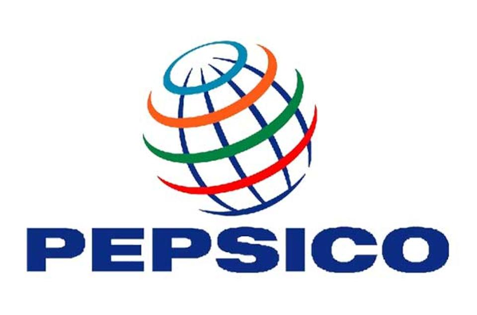

IT Analyst, IT Lead
 · PepsiCo · Purchase, NY
- Provide IT support for Hard Mountain Dew business team
- Organize and manage oversight of devices used by field team
Feb 2022 - Present
IT Associate Analyst, App Support Lead
· PepsiCo · Purchase, NY
- Reduced Delivery and Settlement application incident tickets by 40% YTD
- Act as Liasion between IT Operations team and HQ Business to fix issues and add new features to PBNA delivery iOS applications with minimal disruption to fronline users
- Managed Chilled Transportation Tracking project with planed benefits of $1MM to comply with PEP Food Safety requirements and complete end to end temperature tracking of chilled products from production plan to customer delivery
- Created informational documentation for the 11 applications supported in the PBNA Delivery & Settlement area
July 2020 - Feb 2022
IT Intern, Business Relationship Manager
· PepsiCo · Purchase, NY
- Connect teams in IT and HQ business and communicate value clearly across both teams to align on Sales Transformation Go to Market projects
- Use critical thinking skills to create proof of concepts to present to senior leaders
- Collaborate and coordinate meetings with team members in Texas to develop and present intern challenge solution
- Further continue learning company's internal business by attending and arranging meetings wtih senior leaders, touring warehouses, and taking online learning courses
May 2019 - August 2019